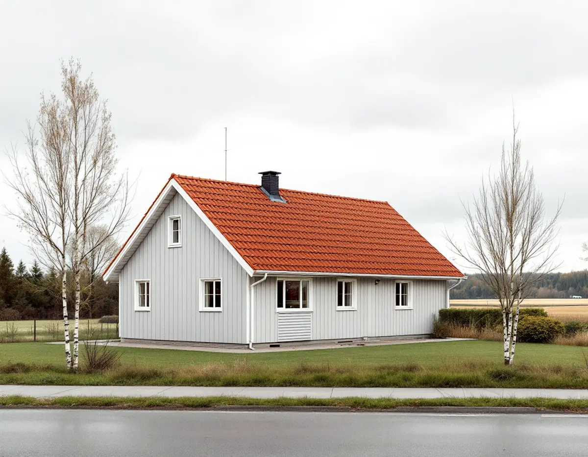
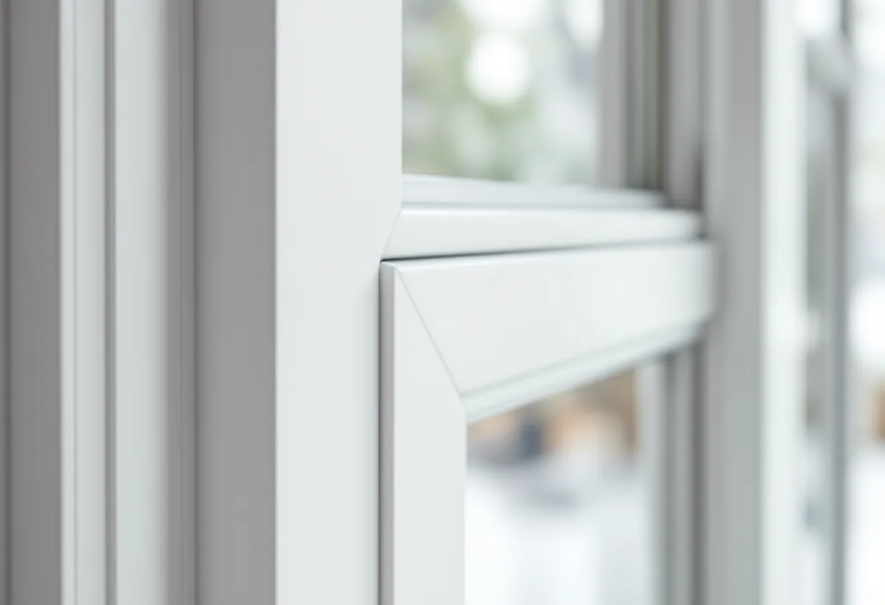

Platsbesök
Vi går igenom fönstren rum för rum och noterar var ljud och drag stör mest.
Vallentuna ligger nära Arlanda, och flygplatsen finns med i nästan varje del av kommunens översiktsplan. För den som bor i ett hus här kan ett fönsterbyte därför handla lika mycket om ljud som om värme. Geal Entreprenad AB byter och renoverar fönster i Vallentuna tätort, Lindholmen, Kårsta och på landsbygden runt omkring och lämnar ett skriftligt kostnadsförslag efter ett gratis platsbesök.

Vallentunas översiktsplan beskriver Arlanda som ett riksintresse som ska skyddas mot åtgärder som påtagligt kan försvåra flygplatsens användning. Hela kommunen omfattas av flygplatsens hinderbegränsande yta, som kan innebära höjdrestriktioner för höga byggnader och objekt.
För buller finns ett påverkansområde, tidigare kallat influensområde. Det omfattar dels mark som berörs eller kan beröras av en ekvivalent flygbullernivå på 55 dB(A) eller mer, dels mark där maxnivåer över 70 dB(A) förekommer mer än tre gånger per årsmedeldygn. Enligt planen har påverkansområdet minskat påtagligt inom kommunen och helt utgått från norra Frösunda.
Samtidigt har ett nytt påverkansområde för lågfartsflyg tillkommit. Bakgrunden är ett villkor i flygplatsens miljötillstånd som säger att lågfartstrafik inte får flyga över tätort lägre än 1 000 meter om den maximala ljudnivån på marken överstiger 65 dBA. Områdena styr framför allt var nya bostäder kan byggas, men de visar också hur nära flyget är.

I översiktsplanens tabell över riktvärden för trafikbuller anges 30 dB(A) som ekvivalent nivå inomhus och 45 dB(A) som maximal nivå nattetid. Utomhus vid fasaden anges 60 dB(A) ekvivalent nivå för bostäder större än 35 kvadratmeter. Värdena används när nya bostäder planeras, men de ger också en bild av vad som räknas som en god ljudmiljö inne.
I ett befintligt hus är fönstren ofta den svagaste delen av ytterväggen när det gäller ljud. Boverket påpekar att olika glas och glaskombinationer ger olika mycket bullerdämpning, solavskärmning och dagsljus, och att det därför lönar sig att utreda vilken typ av glas som passar huset. Boverket nämner också mindre buller utifrån som en av de nyttor som kommer när fönster förbättras eller byts på rätt sätt.
Vid besöket frågar vi därför i vilka rum ljudet stör mest och åt vilket håll de vetter. Ett sovrum mot en väg eller mot flygets riktning kan behöva ett annat glas än resten av huset.
Ett fönster med bra ljudglas hjälper lite om luft och ljud läcker runt karmen. Boverket lyfter fram drevning och isolering mellan karm och vägg, tätningslister mellan båge och karm och bågar som hänger rakt. När ett fönster inte hänger rätt blir tätningen sämre mot karmen.
Blir huset tätare behöver tilluften ses över, eftersom luft som tidigare läckt in kring fönstren kan ha varit en del av ventilationen. Boverket nämner spaltventiler i bågen eller karmen som en lösning. Ett friskluftsdon är samtidigt en öppning, så placering och typ bör väljas med ljudet i tanke, och i ett hus med mekanisk ventilation bör flödena justeras in efteråt.
Ska fasaden kring fönstren lagas eller målas samtidigt finns mer under fasadrenovering i Vallentuna.
Vallentuna kommun skriver att det inte krävs bygglov för nya fönster på ett en- eller tvåbostadshus, men att ändringar ska göras varsamt och anpassas till byggnadens värden. Lov krävs om fastigheten ligger inom ett kulturhistoriskt särskilt värdefullt område eller om byggnaden i sig är särskilt värdefull.
Krävs lov vill kommunen ha en situationsplan, fasadritningar i skala 1:100 över de fasader som berörs, en redovisning av utvändiga material och kulörer med NCS-koder och en kontrollplan. Kommunen nämner att äldre ritningar kan beställas om de finns i arkivet, och de är ofta ett bra underlag även när bytet är lovfritt, eftersom de visar fönstrens ursprungliga indelning.
Vi går igenom fönstren rum för rum och noterar var ljud och drag stör mest.
Ljudglas, energiglas och solskydd väljs efter rummens läge och användning.
Vi kontrollerar om huset ligger i ett särskilt värdefullt område och beställer äldre ritningar vid behov.
Ett skriftligt förslag där fönster, glas, montage och ventiler står var för sig.
Fönstren sätts in med noggrann drevning och tätning runt karmen.
Vi kontrollerar att bågarna sluter tätt och går igenom ventilationen med dig.
Att montera bullerglas och isolerglas och att reparera eller byta ut fönster i ett småhus är rotarbete enligt Skatteverket. Avdraget är 30 procent av arbetskostnaden, högst 50 000 kr per person och år och högst 75 000 kr tillsammans med rutavdrag.
Solfilm och myggnät ger inget avdrag, och material och resor räknas inte. Geal drar avdraget direkt på fakturan.
Antal och storlek på fönstren, vilken ljud- och energiklass glaset ska ha, om bara vissa rum ska få ljudglas, hur mycket foder och bleck som behöver göras om och om ventilationen behöver kompletteras med nya don. Efter ett gratis platsbesök får du ett skriftligt kostnadsförslag.
Byta eller renovera fönster.
Fönsterbyte i Stockholm →Takbyte, takbesiktning och plåtarbeten.
Takläggare i Vallentuna →Villaområden och gårdar.
Takrenovering i Vallentuna →Nytt våtrum, Roslagsvatten och egen brunn.
Badrumsrenovering i Vallentuna →Ritningar, grannar och kommunens mark.
Byggföretag i Vallentuna →Villor och grupphus från 1970-talet och framåt.
Fasadmålning i Vallentuna →Fritidshus, stationssamhällen och villor i Vallentuna.
Fasadrenovering i Vallentuna →Golv på platta och golvvärme i villan.
Golvläggare i Vallentuna →Slipa och laga gamla golvplank.
Golvslipning i Vallentuna →Utbyggda kök, villor och gårdar.
Köksrenovering i Vallentuna →Gårdar, fritidshus och villor i Vallentuna.
Målare i Vallentuna →Rännor, plåttak och uthus i Vallentuna.
Plåtslagare i Vallentuna →Uthus, uterum och fritidshus.
Snickare i Vallentuna →